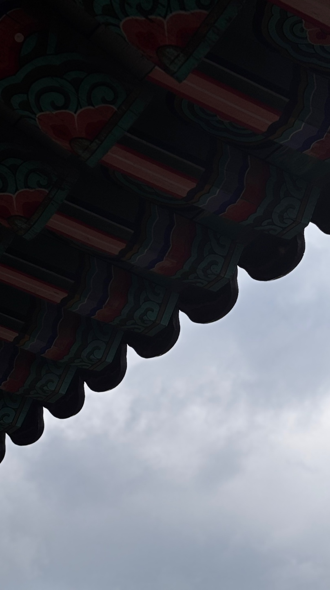

공격이 곧 회복
탄약과 체력이 부족할수록 적에게 접근해 작두와 흡혼을 사용하도록 설계했습니다.
02 / HYPER ACTION FPS
PROJECT OVERVIEW
한국 무속과 한국 요괴를 현대적으로 재해석한 PC 하이퍼 액션 FPS입니다. 빠른 이동과 무기 전환, 공격적 자원 회복을 결합해 플레이어가 위기 상황에서 후퇴하는 대신 적진으로 파고들어 전투 흐름을 역전하도록 설계했습니다.
탄약과 체력이 부족할수록 적에게 접근해 작두와 흡혼을 사용하도록 설계했습니다.
오행 기반 5개 무기와 좌·우 공격으로 총 10개의 공격 역할을 교체합니다.
무령, 작두, 흡혼이 포위·투사체·자원 고갈을 돌파하는 서로 다른 해답으로 작동합니다.
위협 발견 → 표적 지정 → 오행 무기 압박 → 포위 또는 자원 고갈 → 무령·작두·흡혼으로 돌파 → 자원 회수의 흐름을 중심 루프로 설계했습니다.

화·수·목·금·토 다섯 속성에 좌·우 공격을 배치하고 재장전 없이 공유 탄약을 사용합니다. 각 무기는 근거리 폭딜, 관통, 약점, 광역, 지속 화력으로 역할을 분리했습니다.

작두는 탄약을, 흡혼은 체력을 회복하고, 무령은 투사체를 쳐내 전장을 재정렬합니다. 세 시스템은 다음 공격을 가능하게 만드는 전투 연결 장치입니다.

달리기 가속, 더블 점프, 2회 대시, 모서리 오르기를 결합했습니다. 목표 속도는 DOOM보다 빠르고 ULTRAKILL보다 느린 구간입니다.

MEDIA GALLERY


VIDEO
MY CONTRIBUTION
팀장으로서 핵심 전투 경험을 정의하고 전투 루프와 시스템 수치를 Unity에서 실제 플레이 가능한 형태로 연결했습니다.
공격적 자원 회복과 빠른 무기 전환을 중심 경험으로 정의했습니다.
5개 속성, 10개 공격의 역할과 공유 탄약 구조를 설계했습니다.
판정 범위, 발동 조건, 피해와 회복 수치를 구체화하고 구현했습니다.
대시 2회 충전과 체력·탄약·처형 UI를 설계했습니다.
4인 팀의 전투 기준을 관리하고 핵심 재미와 진행 상황을 발표 자료로 정리했습니다.